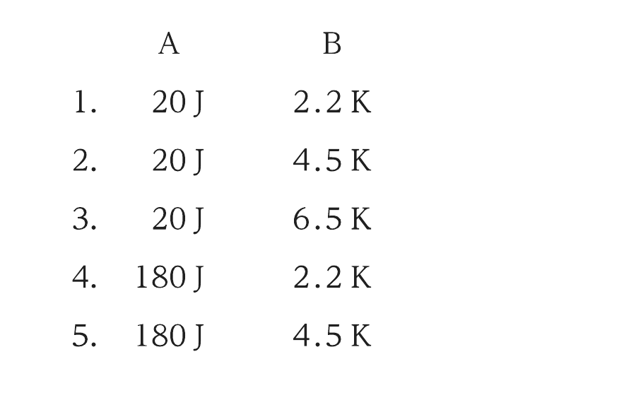
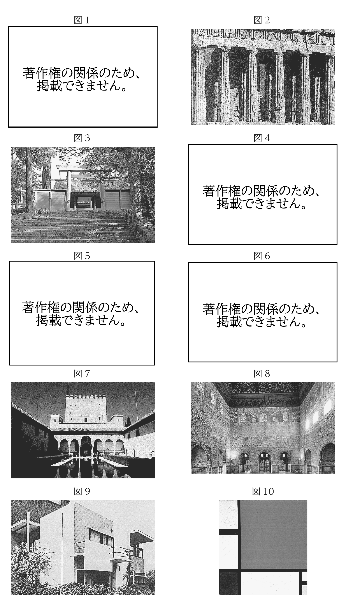
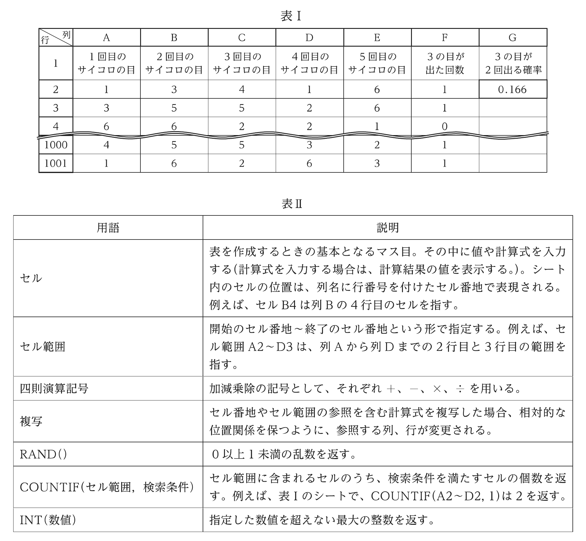
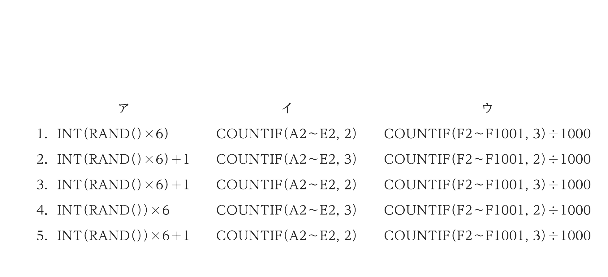

2024年度 基礎能力試験Ⅱ部 問題
先に自力で解いてから、必要な問題だけ解説へ進みます。正答番号・解法はこのページには表示していません。人事院公式の原本PDFを開く ↗
注意事項
- 問題は30題（32ページ）で、解答時間は1時間30分です。
- この問題集は、本試験種目（基礎能力試験I部及びII部）終了後に持ち帰りができます。
- 基礎能力試験II部の途中で退室する場合は、退室時の問題集の持ち帰りはできません。退室時には、基礎能力I及び基礎能力IIの問題集を回収し、希望する方には後ほど渡します。別途試験官の指示に従ってください。なお、試験時間中に、この問題集を切り取ったり、転記したりしないでください。
- 下欄に受験番号等を記入してください。
第1次試験地／試験の区分：教養／受験番号／氏名
指示があるまで中を開いてはいけません。
問1
我が国の動植物などをめぐる状況に関する記述として最も妥当なのはどれか。
- 近年、ニホンカモシカが北海道で、ニホンジカが東北で、ツキノワグマが九州で急激に増加し、農村地域に出没して農作物などに被害をもたらしている。一方、駆除した野生のシカやクマの食肉であるジビエを使った料理を提供する飲食店が増加している。一般に、シカなどの野生動物の食肉は、豚などの家畜の食肉よりも脂肪分が多く高カロリーで硬い部位の肉が多いため、アミラーゼなどの脂肪分解酵素を利用して軟化する食肉処理が行われている。
- マングース(フイリマングース)は、かつてハブを駆除するため、その捕食者として沖縄本島や奄美大島などの南西諸島の島々に導入された。しかし、アマミノクロウサギやアホウドリなどの希少種を捕食するなど生態系への影響が懸念され、現在、マングースの駆除作業が行われている。沖縄本島ではマングースの駆除に成功し、環境省は令和5 (2023)年に絶滅宣言を出したが、奄美大島では駆除作業を継続中である。なお、生態系において、アマミノクロウサギは消費者に、マングースは分解者に位置付けられる。
- 現在、絶滅の危機にある動物を動物園や水族館で飼育・繁殖して、野生復帰させる取組が行われ、ニホンライチョウ、ラッコがそれぞれ、富士山、襟裳岬にて、野生に放されている。特に、富士山ではニホンライチョウの放鳥が順調に進み、令和5(2023)年夏に、野生個体が100羽以上見られるようになった。富士山は、成層火山に分類され、二酸化ケイ素の割合が高い溶岩が緩やかに広く流れ出す噴火を長期にわたって繰り返しており、最後に噴火したのは大正時代である。
- 令和4 (2022)年秋から翌年春にかけて、鳥インフルエンザウイルスが引き起こす高病原性鳥インフルエンザの発生が確認され、多数の採卵鶏が処分された。鳥インフルエンザの発生や飼料価格の高騰などの影響により鶏卵の価格が高騰し、令和5 (2023)年の全国消費者物価指数のうち、鶏卵の指数は前年比で20%以上上昇した。なお、一般に、インフルエンザウイルスにはその表面の物質の微細な違いによって様々な型があり、型が異なると、獲得免疫(適応免疫)における免疫記憶の効果を発揮しにくい。
- スギ花粉症は、スギの花粉に含まれる物質をリンパ球によって抗体として認識し、血液中の血小板が作るグルテンが花粉と結合することによって起こるアレルギー反応である。令和5(2023)年、農林水産省は、花粉の発生源対策として里地里山のスギを皆伐し花粉の発生を抑えることとし、あわせて、その伐採跡地を農地や草地に転換し生物多様性の向上につなげることで、里地里山の保全活用の取組を図る里地里山保全活用行動計画を策定した。
問2
我が国の社会を取り巻く状況などに関する記述として最も妥当なのはどれか。
- 令和5（2023）年4月から、個人情報保護法、行政機関個人情報保護法、情報公開法の三つの法律を統合した新個人情報保護法が施行され、民間企業や国の行政機関に統一のルールが適用されることとなった。一方、自治体の個人情報保護条例については、各自治体のルールを統一するのではなく、それぞれの実態に応じた運用を行うこととされた。平成25（2013）年には、個人情報のうち、クレジットカード番号や銀行口座番号など、特に機密性が高い情報を保護するため、特定秘密保護法が制定されている。
- 被扶養者が一定金額を超える年収を得た場合、その被扶養者を雇う事業者に課される法人税率が上がるため、事業者が労働時間を抑えるよう調整を行う場合があり、この年収の額をいわゆる「年収の壁」という。令和5（2023）年10月から、政府は「年収の壁」対策のため、被扶養者である従業員の年収の額にかかわらず、事業者に一定の法人税を課すこととした。税制度に関しては、1950年代、我が国ではシャウプ勧告により、金と円の交換停止や間接税中心の税制改革が行われた。
- 令和5（2023）年の1年間の刑法犯認知件数は約200万件と、戦後最少となった。背景として、新型コロナウイルス感染症の感染拡大以降、人の流れが回復しなかったことや、インターネットバンキングを悪用した不正送金の対策が強化されたことなどが挙げられる。インターネット上のコンピュータどうしは、TCP/IPと呼ばれる、四つの階層から成るプロトコル群に基づき、32文字のアルファベットから成るIPアドレスを互いに認識することで、情報をやり取りしている。
- 令和6（2024）年1月に発生した令和6年能登半島地震では、マグニチュード7.0、最大震度6弱の揺れが観測され、大きな被害が発生した。この地震では、能登半島沖の活断層がずれ動き、能登地方の各地で地盤の隆起や津波の発生が確認された。活断層とは、断層のうち最近数千年間に繰り返し活動している断層のことをいい、断層の種類には、圧縮力が働くことで断層の上側の地盤がずり上がる正断層と、引っ張りの力が働くことで断層の上側の地盤がずり下がる逆断層がある。
- 令和6（2024）年2月、東京株式市場における日経平均株価の終値は、バブル経済期の1980年代末に付けた最高値を上回り、翌3月には、史上初の4万円台を記録した。株価とは、株式会社が発行する株式の証券市場での価格であり、株式会社においては、株主は資本金を提供するだけであり、会社が倒産しても債権者に対して各株主の出資分以上の法的責任を負わず、これを株主の有限責任という。
問3
世界の映画祭や国際コンクールなどに関する記述として最も妥当なのはどれか。
- 2023年5月、 ドイツのベルリン国際映画祭、 日本の東京国際映画祭と共に世界三大映画祭の一つとして知られるカンヌ国際映画祭がフランスで開催され、 映画「おくりびと」 は日本映画で初めて脚本賞を受賞した。
- 2023年6月、 世界三大音楽コンクールの一つとして知られるチャイコフスキー国際コンクールがロシアで行われたが、 同国のウクライナ侵攻の影響により、 欧米からの参加者が減少した。日本人は過去に、 同コンクールのバイオリン部門などにおいて優勝している。
- 2024年2月、 世界の若手バレエダンサーの登竜門として知られるローザンヌ国際バレエコンクールの決勝がスイスで行われ、 日本人出場者が初めて入賞した。 若手の登竜門としての国際バレエコンクールには、 他にイタリアのヴェネチア・ビエンナーレや、 ドイツのドクメンタなどがある。
- 2024年3月、 米国映画界で最高の栄誉とされるアカデミー賞の授賞式がサンフランシスコで行われ、 日本人監督による 2 本の映画作品が、 それぞれ視覚効果賞と長編アニメーション賞を受賞した。 いずれの賞も、 日本人の映画監督の作品が受賞するのは今回が初めてである。
- 2025年10月、5年に 1回開催されるショパン国際ピアノコンクールが、 ショパンの出身地ポルトガルで開かれる予定である。 ポルトガルでは、 同国出身のフランツ・カフカを記念した文学賞が毎年授与されている。
問4
近年の国際情勢などに関する記述として最も妥当なのはどれか。
- 2022年、 我が国は、 いわゆる安保 3 文書と呼ばれる、 国家安全保障戦略、 国家防衛戦略、 経済安全保障推進法案を閣議決定した。 経済安全保障推進法では、2027年度の防衛費を対 GDP比で 2% とする方針と反撃能力 ( 敵基地攻撃能力 ) の保有が明記された。 防衛費については、1980年代に中曽根康弘内閣において、GNP( 国民総生産 ) 比 1% 以内とすることが定められた。
- 2023年、ASEAN( 東南アジア諸国連合 ) 加盟国の各国軍は、ASEAN の枠組みとして初めてとなる合同演習を南シナ海で行った。 南シナ海では、 南沙諸島 ( スプラトリー諸島 ) と西沙諸島(パラセル諸島 ) を中心とした領有権をめぐる問題があり、 中国は人工島を建設するなど軍事拠点化を進めている。 我が国は、 第二次世界大戦において、 米領フィリピンや英領ビルマで米英軍と戦うなどして、 一時は東南アジア一帯をほぼ占領し、 その範囲に両諸島も含まれていた。
- イスラエルとイスラム組織ファタハによる、 パレスチナ自治区ガザ地区をめぐる戦闘が激化し、ガザの保健省によると、2024年5月時点でガザの死者数は 3 万人を超えた。 イスラエルは第一次世界大戦後に英国から独立を宣言したが、 これを認めないアラブ諸国と数次にわたる戦争が繰り返されている。 特に、1980年代の第 2 次中東戦争の際に起きた石油危機は経済面においても世界に大きな影響を与えた。
- 2014年、 ロシアは、 ウクライナ南部のクリミア半島に侵攻し、 自国領に組み入れた。 翌年、両国の隣国であるチェコでミンスク合意が結ばれ、 ロシアによるクリミア半島の領有をウクライナが認める代わりに、 親ロシア派武装勢力が実効支配するウクライナ南部 2 地域からロシア軍が撤収することが定められた。 その後、2022年、 南部 2 地域の独立を承認したロシアは、 ウクライナに侵攻した。
- 2024年、 米国は、 黒海で商船への攻撃を繰り返すイエメンの反政府武装組織フーシの拠点を攻撃した。 フーシは、 イスラム教スンナ ( スンニ ) 派系の一派の組織であり、 スンナ派の人口が多いイランや、 レバノンのスンナ派民兵組織ヒズボラから支援を受けているとされる。 スンナ派と、世界のイスラム教徒人口の大部分を占めるシーア派は、 指導者の選出方法については意見が一致しているが、 唯一神、 預言者、 聖典などの根本教義については意見が異なる。
問5
こどもをめぐる状況などに関する記述として最も妥当なのはどれか。
- 2022年、 こども家庭庁設置法が成立し、 同時に、 国連の子どもの権利条約に対応したこども基本法が成立した。 子どもの権利条約は、12 歳未満のこどもの基本的人権の国際的保障を目的とした条約で、 女子差別撤廃条約と共に国連発足時の 1945年に採択された。
- 2015年に国連で採択された「持続可能な開発目標 (SDGs)」では、17 の目標の一つに貧困をなくすことを掲げている。SDGs の採択を受け、 我が国では実施指針の一つとして、 子どもの貧困対策法を制定し、 こどもの貧困問題に取り組んでいる。 しかし、2021年の我が国のこどもの相対的貧困率は 20% を超えており、 この数値は G7 各国の中で最も高い。
- 合計特殊出生率は、 一人の女性が一生の間に出産するこどもの数の平均を表したもので、 我が国では、1990年代まで合計特殊出生率 2.1 以上を維持してきたが、2000年代以降は 2.1 を下回る状況が続いている。 少子化対策強化のために、2023年、 政府は、 こどもが多い世帯ほど所得税が軽減される「N 分 N 乗」方式を導入した。
- 2023年、 国連は、 ウクライナへの侵攻を続けるロシアをこどもの権利を著しく侵害した国の一つに指定した。 国連の安全保障理事会の常任理事国がこれに指定されるのは初めてである。 また、 国連は、 ウクライナにもこどもを守る対策の改善を求めた。
- 中国では、1970年代から一人っ子政策を実施してきたが、 急速に進む少子高齢化に対応するため、2010年代に人口抑制政策を全面的に撤廃した。 しかし、 特に農村部の少子高齢化が著しく、2010年代後半から総人口が減少している。
問6
xy平面において、点(6,−2)を通る、円 x²＋y²＝20 の接線の方程式は次のうちではどれか。
- x＋2y−2＝0
- x−4y−14＝0
- 2x＋y−10＝0
- 3x−y−10＝0
- 3x＋2y−14＝0
問7
電気に関する記述として最も妥当なのはどれか。
- 物体を形づくっている原子は、 電気をもたない中性子から成る原子核と、 その周りを取り巻く正の電気をもつ陽子及び負の電気をもつ電子から構成される。 原子のもつ陽子の数と電子の数は通常等しいため、 原子や物体は電気的に中性である。 しかし、 二つの物体をこすり合わせると、一方の物体に陽子が移動し、 もう一方の物体に電子が移動するため、 それぞれの物体が正及び負に帯電する。
- 金属の導線に乾電池をつないで電圧を加えると、 電子は、 乾電池のマイナス（−）極へ向かう力を受けて導線内を移動する。 導線を流れる電流とはこの電子の移動のことであり、 導線内に流れる電流の大きさは、( 導線内にある電子の個数 ) × (電子 1 個当たりの電気量 ) で表される。 なお、電子は気体の中は移動できないが液体の中は移動できるため、 大雨のときには雨水の中を電流が流れて、 雷が発生することがある。
- 乾電池からは一定の向きに流れる電流が得られ、 このような電流のことを直流 (DC) という。これに対して、 大きさと向きが周期的に変化する電流のことを交流 (AC) という。 1 秒間当たりのこの変化の繰り返しの回数を、 交流の周波数といい、 単位にヘルツ (Hz) を用いる。 家庭用のコンセントから得られる電気は交流であり、 ノートパソコンなどの直流の電気で動作する電子機器の電源をコンセントから得るには、AC アダプターを必要とする。
- 導体に電圧を加えて電流を流したとき、 導体からは熱が発生する。 このとき導体から発生する熱量は、(導体内に流れる電流の大きさ)×(電流を流す時間)²÷(導体に加えた電圧)で表され、電圧が高いほど発生する熱量が少なくなる。 そのため、 発電所で発電される電気は、 高い電圧に変圧されてから送電される。 送電された電気は、 各変電所で順次低い電圧に変換されるが、 その変換には主にトランジスタを用いて構成された変圧器 ( トランス ) が用いられる。
- 物質は、 常温での電流の流れやすさの順に導体・半導体・不導体に分類される。 例えば、 銅やゲルマニウムは導体であり導線や送電線に用いられ、 塩化ビニルやシリコンは半導体であり IC(集積回路 ) など微小な回路の配線に用いられ、 ゴムやニクロムは不導体であり導体の絶縁などに用いられる。 一般に、 導体は、 温度が低下するほど電流が流れにくくなり、 一定温度以下で電流が全く流れなくなる現象のことを超電導 ( 超伝導 ) という。
問8
次の①、②は、熱に関する記述であるが、A、Bに当てはまるものの組合せとして最も妥当なのはどれか。
① 外部から80Jの仕事をされた物体の内部エネルギーが100J増加したとき、物体が外部から加えられた熱量は A である。
② 0.5kgの金属球を床上3mの高さから床に自由落下させる操作を30回繰り返した。重力加速度の大きさを10m/s²、金属球の比熱を0.2J/(g・K)とし、また、落下で失った重力による位置エネルギーが全て金属球の温度上昇に使われたとすると、温度は B 上昇すると考えられる。
しかし、実際には、重力による位置エネルギーの全てが熱に変換されることはなく、一部は別のエネルギーとなり、また、熱の一部は外部に逃げるため、温度上昇の値は B よりも小さくなる。

問9
化学結合や結晶に関する記述として最も妥当なのはどれか。
- 共有結合は、原子どうしがそれぞれ不対電子を出し合い、この不対電子が両原子に共有されてできる結合である。各原子の電子状態を表した式を示性式といい、共有電子対を表した線を価標という。示性式で表すことで、水素と結び付く価標の数から、硫化水素(H₂S)は一重結合を、酢酸(CH₃COOH)は三重結合と単結合をもつことが分かる。
- 自由電子による金属元素の原子どうしの結合を金属結合という。金属結合で引き合っている金属原子が規則正しく配列すると、自由電子が移動をやめて各元素ごとに固定され、金属結晶が形成される。金属が金属結晶を形成すると、電気伝導性が低下して展性や延性を示さなくなり、変形しにくい強固な固体となる。
- 分子結晶は、分子どうしが分子間力で引き合い、規則正しく配列した結晶であり、一般に電気伝導性はよくないが、結晶が融解すると電気伝導性はよくなる。また、一般に分子結晶は融点や沸点が低いが、一酸化炭素や塩化水素など極性分子から成る分子結晶は、分子間力が比較的強いため昇華しやすいものが多い。
- イオン結晶は、陽イオンと陰イオンがイオン結合によって規則正しく配列した結晶である。イオン結合は比較的強い結合であるため、イオン結晶は、一般に融点が高くて硬いが、結晶に外力を加えるとイオンの配列がわずかにずれ、陽イオンどうし、陰イオンどうしで反発力がはたらくため特定の面に沿って割れやすい。このように、結晶が特定の面に沿って割れることをへき開という。
- イオン結合のうち、一方の原子から非共有電子対が提供され、それを両方の原子が互いに共有してできる結合を、配位結合という。配位結合の部分は正か負のイオンとなるので、他の結合と区別できる。例えば、アンモニウムイオン(NH₄⁺)では、四つのHのうち、H⁺となっている原子が一つあり、この原子とNとの結合が配位結合である。
問10
酸化還元反応に関する記述として最も妥当なのはどれか。
- 物質が酸素を失ったとき、酸化されたといい、また、水素を失ったとき、還元されたという。酸化と還元は必ず同時に起こるものであり、例えば、オゾンは酸素を失って酸化されることで、相手の物質を還元する強い還元剤であり、温水プールの水の殺菌に利用されている。
- 金属が水溶液中で陽イオンになろうとする性質を金属のイオン化傾向といい、イオン化傾向が大きい金属ほど酸化されにくい。スズの板材の表面を銀でメッキしたものをブリキといい、スズよりもイオン化傾向が大きい銅がスズの腐食を防ぐため、屋根等の建築材料に用いられている。かつて、スズを含む工場排水が原因で、公害病の一つであるイタイイタイ病が発生した。
- 金や白金は、貴金属と呼ばれ、濃硝酸とは反応しないが、濃硫酸と酢酸を体積比2:1で混合した王水には溶ける。白金は、近年、光触媒として注目されており、赤外線を当てると、有機化合物を分解し電子とともに空気中へ放出する性質を利用して、油汚れの洗浄剤などに利用されている。
- 酸化還元反応を利用して電気エネルギーを取り出す装置を電池という。電池は、負極で酸化反応、正極で還元反応が起こる。負極に黒鉛、正極にコバルト酸リチウムを用いる電池をリチウムイオン電池といい、小型で軽量であるため、スマートフォンやデジタルカメラ、電気自動車の駆動用電池などに用いられている。
- 電解質の水溶液に電極を入れ、直流電流を流して酸化還元反応を起こさせることを電気分解といい、一般に、酢酸ナトリウムとクエン酸の組合せが電極に用いられる。また、化合物の状態で存在する金属を電気分解を利用して単体として取り出す操作を製錬といい、例えば、銀の製錬では、ボーキサイトとコークスを電極に用いて製造が行われている。
問11
生態系に関する記述として最も妥当なのはどれか。
- 森林や草原など外から見て分かる植生の様相を相観という。植生を構成する植物のうち、地表面を広く覆っているなど量的に割合の高い種を優占種といい、例えば、ブナを優占種とする森林はブナ林、ススキを優占種とする草原はススキ草原とも呼ばれる。また、植生を構成する植物とそこに生育する動物や微生物を含む全ての生物のまとまりをバイオーム（生物群系）という。
- 森林土壌は、落葉・落枝などが分解されてできた有機物から形成され、腐植層と落葉層の2層から成り、特に落葉層は栄養塩類に富んでいる。また、熱帯では、微生物の活動が活発で土壌生態系も多様なため、腐植層が厚く通気性の良い単粒構造の土壌となり、樹木の根がよく育つ森林土壌が形成される。
- 硬葉樹林は、温帯のうち、比較的温暖な地域に分布する。日本では、本州中部以南に分布し、葉が厚く光沢のあるモミやクスノキなどの常緑広葉樹が見られる。一方、夏緑樹林は、温帯のうち、比較的冷温な地域に分布する。日本では、東北地方などに分布し、夏に葉をつけ、秋に紅葉し、冬に落葉するクヌギやメヒルギなどの落葉広葉樹が見られる。
- 一般に、標高が100 m高くなるごとに気温は約1 ℃の割合で低くなる。標高によって植生は異なり、垂直分布における山地帯の上限を森林限界という。北海道では、山地帯よりも標高が高い亜高山帯には、コマクサ、クロユリなどの草本が生育し、夏季にはお花畑と呼ばれる草原が見られ、さらに高所の高山帯には、氷河が広がり、土壌が未発達で地衣類やコケ植物のみが生育する。
- 陸地で見られる遷移を乾性遷移といい、湖沼で見られる遷移を湿性遷移という。湖沼では、スイレンなどの浮葉植物、ヨシなどの抽水植物、クロモなどの沈水植物の順に湿性遷移が進む。その後、土砂が堆積して陸地化すると、乾性遷移に移行し、一次遷移、二次遷移を経て、陽樹を中心とした極相林が形成される。
問12
ヒトの体内環境の維持に関する記述として最も妥当なのはどれか。
- 神経系には、脳や脊髄から成る中枢神経系とそれ以外の末梢神経系があり、中枢神経系には交感神経と副交感神経を含む自律神経系がある。交感神経と副交感神経はそれぞれ特異的に作用する器官や組織が決まっており、例えば、心臓では交感神経が働き、拍動が促進され、胃や小腸では副交感神経が働き、ぜん動運動が抑制される。
- ホルモンは、内分泌腺の細胞から体液中に分泌され、特定の器官や細胞に作用する物質である。体にはホルモン濃度が適正値になるように調節する仕組みが備わっており、最終的につくられた物質や得られた効果が、初期の段階に戻って作用する仕組みをフィードバック調節という。多くのホルモンは、負のフィードバックによって分泌量が調節されている。
- 血液中に含まれるスクロースを血糖と呼び、血糖値は食事直後には一時的に上昇するが、やがて正常な範囲に戻る。こうした調節は、自律神経系とホルモンによって行われており、高血糖のときには、糖質コルチコイドやアドレナリン、グルカゴンの働きにより血糖値が低下し、低血糖のときには、インスリンの働きにより血糖値が上昇する。
- ヒトを含む哺乳類は、脊椎動物の中で唯一の恒温動物であり、体温はほぼ一定に保たれている。外界の温度が低く、恒常性の維持に危機的な状況においては、ホルモンは働かず、交感神経の働きにより、立毛筋の収縮などによる皮膚からの熱放散の抑制や、肝臓での代謝による発熱の増加が促進される。一方、外界の温度が高いときは、主にホルモンが働く。
- ホルモンは、その性質によって、標的細胞への作用の仕方が異なる。グルカゴンなどの水溶性ホルモンは、親水性であり、細胞膜を通過できるため、核内に存在するリボソームと結合し、特定の遺伝子の発現を調節する。一方、インスリンなどの脂溶性ホルモンは、疎水性であり、細胞膜を通過できないため、細胞膜上の受容体と結合して細胞内の反応を引き起こす。
問13
生物の変遷などに関する記述として最も妥当なのはどれか。
- 原始太陽系の中の微惑星が互いに衝突を繰り返し、 原始惑星の一つとして地球が誕生した。 誕生当初、 地球表層の平均気温は、 約−40℃〜−50℃と低く、 地球全体が氷に覆われていたと考えられており、 この状態を全球凍結 (スノーボール・アース ) という。 やがて地球内部の温度が上昇し、 表層の氷が溶けて原始海洋が形成されると、 各地の海岸沿いに分布する熱水噴出孔の付近で、 最初の生命である微生物が誕生したと考えられている。
- 原生代初期には、光エネルギーを用いて有機物を合成する生物が出現した。最初の光合成生物であるシアノバクテリアが、海中での光合成によって酸素を放出したことにより、大気中の酸素量が大幅に増加した。原生代中期には、バージェス動物群と呼ばれる最初の多細胞生物群が出現し、その後、古生代に入ると、カンブリア紀の大爆発と呼ばれる無脊椎動物の爆発的増加現象が起こった。
- 古生代中期には、 大気上層に医積された二酸化炭素によって、 生物に有害な紫外線が吸収されるようになったことから、 生物が陸上に進出し始めた。 最初の陸上植物であるメタセコイアや、陸上動物のアノマロカリスなど、 多様な生物が栄えたが、 古生代末期に超大陸パンゲアが出現したことなどにより、 陸上環境が大きく変化したため、 陸上動物の多くが絶滅した。 古生代の示準化石としては、 カヘイ石やデスモスチルスなどが用いられている。
- 中生代初期には、海中でアンモナイトや三葉虫などが繁栄した。その後、白亜紀には新たに爬虫類や哺乳類が出現し、陸上ではティラノサウルスやトリケラトプスなどの恐竜が繁栄した。また、中生代には、温暖な気候が長く続いたため、シダ植物などの新しい型の植物が出現し、森林が広がった。現在人類が使用している石炭の多くは、中生代の植物の遺骸が大量に蓄積してできたものである。
- 新生代には、哺乳類と被子植物が繁栄した。霊長類は哺乳類に含まれ、霊長類の中から人類につながる祖先が生まれたと考えられており、最古の人類の化石は、アフリカの地層から発見された猿人のものとされている。第四紀は、寒冷で大陸の氷河が増えた氷期と、温暖で大陸の氷河が減った間氷期とが繰り返された時代であり、ナウマンゾウなどが繁栄した。
問14
世界の思想に関する記述として最も妥当なのはどれか。
- ギリシアの合理主義は、理性を働かせるよりも、自然を知ることを通じて自然を支配しようとする観想(テオーリア)に特徴がある。自然哲学者と呼ばれる初期の哲学者は、移ろいゆく万物を冷静に見つめ、その根底にある不変の理法(ロゴス)を捉えようとした。自然哲学の祖とされるタレスは、火を万物の根源と考え、火によって世界の成り立ちとその諸現象を説明しようとした。
- キリスト教がローマ帝国の国教となった4世紀末には、教父と呼ばれる人々によって神学が整えられ、「父なる神」と「子なるキリスト」と聖霊の三者は実体が一つであるとする三位一体の教義が確立した。代表的教父であるアウグスティヌスは、原罪を負っている人間は、神の恩寵に頼ったままでは罪からの救いはおろか善を志すこともできないと説き、恩寵からの自立に必要なキリスト教の三元徳である知恵、勇気、正義の体現を重視した。
- ルネサンス期の人文主義者たちは、世俗の生活に積極的意義を見いだし、そこで能動的に活動する人間のうちに価値を求め、力強い意志と幅広い知識によって自分の能力を全面的に発揮することのできる万能人(普遍人)を理想とした。ピコ=デラ=ミランドラは、「人間の尊厳について」の中で、存在の仕方が決定されている動物や植物と異なり、自分で自分の在り方を決定する自由意志を持っているところに人間の尊厳があると述べた。
- 仁と礼によって秩序を説く儒家の思想は、中国の春秋時代末期に、封建秩序が崩壊し混乱する社会の中で花開いた。儒家の祖である孔子は、客観的な形式である仁と、心の持ち方である礼の一つの側面から人間の道を捉え、仁に従って他人に接することは礼の実践であり、他人に敬意を持って接することだと考えた。また、人徳を備えた君子による法と刑罰を用いた統治が、社会秩序の安定をもたらすとし、徳治主義の理想を示した。
- 他力による救いを説いた浄土信仰の教えに対して、自力による修行を積み、悟りを開くことを説いたのは禅の教えである。禅宗の代表的な思想家である道元は、臨済宗を日本に伝えた。道元は、念仏や坐禅など様々な修行を実践する只管打坐を重視し、それにより、一切の執着から解き放たれて自在の境地である身心脱落に至ることができるとした。そして、念仏や坐禅の修行を悟りに至る手段として考え、修証一等を説いた。
問15
次の図1～10は世界の遺跡・建築などの写真であるが、これらの図に関する記述として最も妥当なのはどれか。

- 図1、図2はイタリアのローマにあるパルテノン神殿である。オーダー(柱とその上部構造の構成に見られる規則)はコンポジット式であり、柱はエンタシスと呼ばれる円錐台状で、フルートと呼ばれる彫溝が刻まれている。
- 図3、図4は島根県にある出雲大社である。社殿は大仏様(唐様)で、60年に一度、建て替えが行われ、新社殿は旧社殿の形式に忠実に倣って造られる。これを式年造替(遷宮)といい、直近では2013年に行われた。
- 図5、図6はフランスのパリにあるパリ大聖堂(ノートルダム大聖堂)である。馬蹄形アーチや火頭窓などを特徴とするロココ様式である。2019年に火災により尖塔が焼け落ちたが、2023年現在、修復が進められている。
- 図7、図8はスペインのグラナダにあるアルハンブラ宮殿である。イスラム建築では、人間や動物を彫刻や絵画で表して装飾することが禁じられていたため、幾何学的文様の装飾などが発達し、この宮殿ではそうした装飾を見ることができる。
- 図9はオランダのユトレヒトにあるシュレーダー邸である。サルバドール・ダリによる図10のような抽象絵画と並び、簡単な幾何学的形態と単純な色彩による芸術であるアール・ヌーボーの様式を用いた代表的建築物とされる。
問16
近代以降における戦争などに関する記述として最も妥当なのはどれか。
- 日清戦争勃発の翌年の 1895年に、 日本の全権伊藤博文・青木周蔵と清国の全権李鴻章との間で下関条約が調印され、 清国は、 日本への遼東半島の割譲、 賠償金の支払いなどを認めた。 しかし、 三国干渉により、 清国からの追加の賠償金と引換えに、 日本が遼東半島を返還すると、 ロシアは満州の鉄道敷設権を獲得し、 ドイツは遼東半島南部の旅順・大連を租借するなど、 欧米列強による清国進出が相次いだ。 日本は、 賠償金を基に、 官営の八幡製鉄所や富岡製糸場を設立した。
- 朝鮮への進出を目指す日本は江華島事件をきっかけにロシアとの対立が深刻化し、事件発生の翌年の1904年に日露戦争が勃発した。その後日本は、戦争前から交渉中であった日英同盟の締結を実現して英国の支援を受け、ロシアのバルチック艦隊を撃破した。これを機に、日本はアメリカ大統領のセオドア＝ローズヴェルトに戦争終結の調停を依頼し、日本の全権小村寿太郎とロシアの全権ウィッテとの間でポーツマス条約が調印され、ロシアは、日本への南樺太・千島列島の割譲、日本の韓国に対する指導権などを認めた。
- 1914年、第一次世界大戦が始まると、日本は、軍事力を背景に中国の孫文に対して二十一か条の要求を突き付け、山東省のドイツ権益の継承などについての日本の要求を認めさせたため、直後に中国ではこれに対する抗議運動として五・四運動が起こった。戦後、米英仏伊と並んで日本も参加したパリ講和会議が開催されたが、開催後間もなくロシアにおいて革命が起こり、社会主義政権が樹立すると、社会主義の影響を恐れた日米英仏は、共同でシベリアに出兵した。
- 1931年、関東軍は、満州軍閥の張作霖が乗っていた列車を柳条湖で爆破し、これを中国軍のしわざとして、軍事行動を開始して満州の大半を占領し、清朝最後の皇帝溥儀を執政にして満州国の建国を宣言した。その後、停戦協定を結んで満州事変を終結させたものの、1937年、北京郊外の盧溝橋付近で日中両軍の衝突事件が起こると、高橋是清内閣は日本軍の増派を決定して、中国に宣戦布告を行い、全面戦争に発展した。
- 1939年、ドイツはソ連と不可侵条約を結んだ後、ポーランドに侵攻し、第二次世界大戦が勃発した。日本は当初この戦争に不介入の方針をとっていたが、ドイツがヨーロッパ各地で勝利を収めると、ドイツとの提携を強化する動きが強まり、日独伊三国同盟を結ぶとともに、ソ連との間では日ソ中立条約を結んだ。その後、日本がフランス領インドシナ南部に進駐する中、反発を強めた米国はハル＝ノートを日本に提示して日米交渉は破局を迎え、日本はハワイの真珠湾を攻撃した。
問17
室町時代半ばから江戸時代初めまでの我が国の出来事に関する記述として最も妥当なのはどれか。
- 鎌倉府の支配下にあった東国では、承久の乱を機に鎌倉公方が古河公方と堀越公方とに分裂し、関東管領佐竹氏も山内・扇谷の両家に分かれて争った。この混乱に乗じて京都から下ってきた北条早雲（伊勢宗瑞）は、堀越公方を滅ぼして安房を奪い、次いで常陸に進出してそこを本拠とした。その後北条氏は、関東と東北の大半を支配する大名となった。
- 応仁の乱の後、室町幕府における主導権をめぐり、管領細川氏が将軍を廃するという明応の政変が起こった。これを機に細川氏が幕府の実権を握ったが、その実権は更に細川氏の家臣らに移っていった。16世紀後半、織田信長が、畿内を追われていた足利義昭を立てて入京したが、義昭は、将軍に就くとその権力の回復を目指す中で信長と敵対したため、信長によって京都から追放され、これにより室町幕府は滅亡した。
- 守護大名のうち、甲斐の武田氏、駿河・遠江の今川氏、長門の島津氏などは、自らの力で引き続き領国を支配し続ける一方、その他の国では新たに台頭した守護代や国人なども勢いを振るい、これらの地方権力は戦国大名として実力で独自の支配を行った。戦国大名の領国支配では、分国法が定められることもあり、今川氏の『難太平記』、伊達氏の『塵芥集』、相良氏の『甲州法度之次第』などがある。
- 豊臣秀吉は、全国の大名に私戦を停止するよう命じ、その領国の確定を将軍の裁定に任せるために相対済し令を出した。秀吉は、東北地方を平定した後に九州の諸大名をも服属させて全国統一を完成するとともに、太閤検地と呼ばれる全国的な土地調査を進め、荘園制の下で複雑な状態にあった土地の権利関係を整理した。これにより農民はその土地所有が法的に認められるとともに、その持ち分である石高に応じた年貢などの負担が義務付けられることとなった。
- 江戸に幕府を開いた徳川家康は、早々に子の秀康に将軍の地位を譲って将軍職の徳川氏世襲を世に示しつつ、自身は駿府に移って大御所として実権を握り続け、大坂の役（大坂冬の陣・夏の陣）で豊臣氏、上杉氏、毛利氏といった諸大名を滅ぼした。その後、江戸幕府は、一国一城令を出して大名の居城を一つに限ったり、禁中並公家諸法度を制定して大名間の私的な婚姻を禁じたりするなどして、厳しく大名を統制した。
問18
アメリカ合衆国の歴史に関する記述として最も妥当なのはどれか。
- フランスは、17 世紀にカナダにケベック植民地を建設し、 ルイ 14 世の時代に北アメリカにルイジアナ植民地を獲得した。 一方、 イギリスは、 北アメリカにヴァージニア植民地を設け、 移住したピューリタンなどがニューイングランド植民地を形成した。18 世紀になると両国間で戦いが繰り返され、 北アメリカでフレンチ = インディアン戦争が勃発するが、 戦費調達で有利に立ったイギリスが勝利した。
- イギリスは、 北アメリカの 13 の植民地に対して植民地議会の設置を認めず、 印紙法や茶法を定めて課税を行ったため、 植民地の人々の不満が高まり、 アメリカ独立戦争が始まった。 アウステルリッツの戦いで独立軍が勝利し、 独立宣言が発表された後、 アメリカ合衆国の独立が承認された。 独立宣言は、 圧政への抵抗権を主張したモンテスキューの思想を参考に起草された。
- アメリカ合衆国は、 領土拡大のため、 スペインからフロリダを買収し、 アメリカ = メキシコ戦争に勝利してオレゴンを併合した。 また、 ヨーロッパ諸国のアメリカ大陸への干渉に反対し、 アメリカ合衆国もヨーロッパに干渉しないという相互不干渉を表明するモンロー宣言を発表する一方、「マニフェスト = デスティニー( 明白な天命 )」を主張して、 ラテンアメリカ諸国の独立に反対し、 積極的に干渉した。
- 西部の開拓とともに、 奴隷制の存続と保護貿易を求める南部と、 奴隷制の廃止と自由貿易を求める北部の対立が強まった。 奴隷制拡大に反対する民主党のリンカンが大統領に選出されると、南部がアメリカ連合国を結成し、 南北戦争が勃発した。 南北戦争が終わると、 リンカンは奴隷解放宣言を出し、 奴隷制が廃止されたが、20 世紀になるまで黒人には投票権が与えられなかった。
- 経済発展を支える移民労働力を確保するため、 国務長官ジョン = ヘイは、 東欧・南欧からの移民の流入を狙い、 門戸開放宣言を発した。 また、 マッキンリー大統領は、 アジア諸国に対して武力干渉を伴う棍棒外交を展開する一方、 南米諸国に対してアメリカ民主主義の道義的優位を説く宣教師外交を展開し、 海外諸国への勢力拡大に力を入れた。
問19
17 世紀以降の世界の諸地域における革命に関する記述として最も妥当なのはどれか。
- 17 世紀後半のイギリスでは、 ジェームズ 2 世がイギリス国教会の復活を図ったため、 王権を擁護するホイッグ党と議会の権利を主張するトーリ党の両党派は、 スペイン総督のウィレムに介入を要請した。 ジェームズ 2 世が亡命すると、 ウィレム夫妻は議会が決議した権利の宣言を承認して、 ウィリアム 3 世とメアリ 2 世として王位に就いた。 議会は、 この宣言を大憲章 (マグナ = カルタ ) として制定した。
- 18 世紀末のフランスでは、 男性普通選挙による国民公会が成立し、 シャルル 10 世が処刑された後、 王政の廃止と共和政の樹立が宣言された。 国民公会で権力を握った急進共和主義のフイヤン派は、 リシュリューを中心に、 封建的特権の無償廃止を決定し、 最高価格令によって物価統制を図るなど、 民衆に配慮した政策を打ち出す一方で、 反対派を弾圧する恐怖政治を行い、 ブリュメール 18日のクーデタで倒された。
- 19 世紀後半のオスマン帝国では、 改革派の大宰相ミドハト = パシャの下で、 アジア初とされる憲法が発布された。 その後、 アブデュルハミト 2 世は、 ロシア = トルコ戦争の開始を理由として憲法を停止し、 パン = イスラーム主義を掲げて体制の維持を図った。 憲法停止に不満を抱く「青年トルコ人」と呼ばれた人々は「統一と進歩団」を結成し、20 世紀初めの蜂起で政権を獲得し、憲法を復活させた。
- 19世紀末のイランでは、ウマイヤ朝政府がフランスの会社にタバコの独占利権を譲渡すると、これに反対するバーブ教徒の乱が勃発した。これをきっかけとして専制を批判する立憲運動が起こり、その結果、20世紀初頭には、国民議会が開かれ憲法が制定された。しかし、イランの分割を図るフランスとドイツの干渉が強まり、ドイツの軍事干渉によって議会は閉鎖された。
- 20世紀初頭のロシアでは、首都モスクワにおける血の日曜日事件を契機として、労働者のストライキや農民の蜂起、民族運動が起こった。労働者の自治組織であるボリシェビキが武装蜂起に立ち上がると、軍隊内部でも反乱が発生した。これに対し、アレクサンドル2世は、十月宣言を出して国会(ドゥーマ)の開設を約束し、改革派のレーニンを首相に任命して事態の収拾を図った。
問20
アフリカの地理に関する記述として最も妥当なのはどれか。
- アフリカには多くの民族がおり、その分布は、サハラ砂漠を境に、北側の北アフリカと南側の中南アフリカに分けられる。北アフリカでは、主にスワヒリ語を話し、キリスト教を信仰するベルベル人が多数を占めており、歴史的にも文化的にもヨーロッパとのつながりが深い。一方、中南アフリカは、英語やフランス語など植民地時代の宗主国の言語を公用語としている国が多く、国民の大多数がイスラム教を信仰する国が大半を占めている。
- アフリカ大陸は、アフリカプレート上の安定陸塊で、大陸全体がすり鉢状の盆地であるが、大陸の東部から南部にかけては、全長5,000kmを超える大地溝帯があり、アフリカ最高峰のキリマンジャロ山や、タンガニーカ湖、ナセル湖、ヴィクトリア湖などの断層湖が存在している。このうちヴィクトリア湖は、世界最大の流域面積を持つナイル川の源流の一つである。また、アフリカ大陸の北西部にはアトラス山脈が、南端部にはドラケンスバーグ山脈が連なっている。
- アフリカ大陸では、赤道を軸に南北で対称的に気候区が分布する。大陸の総面積の半分以上を熱帯気候が占め、次いで多くを占めるのが乾燥帯気候で、温帯気候は約1割にすぎない。アフリカ南部の西海岸は、南下する暖流のカナリア海流の影響でサバナ気候が広がり、反対側の東海岸は、北上する寒流のモザンビーク海流の影響で雨が少なく、ナミブ砂漠などの海岸砂漠が続いている。また、大陸の南端部は、温暖湿潤気候となっている。
- アフリカでは植民地時代から、各国内で野菜や果物など多種多様な作物を栽培し、先進国に輸出する商品作物のモノカルチャーが長く続いてきた。油やしや落花生は、従来は機械用の潤滑油や食用油の原料としてヨーロッパへ輸出された作物で、現在でもコートジボワールやガーナの重要な輸出品となっている。また、エチオピアでは、英国の植民地時代に高原地帯で綿花のプランテーション農業が盛んになり、現在でも綿花は同国の主要な輸出品となっている。
- アフリカは、石油などのエネルギー資源のほか、鉄鉱石や銅などの金属資源にも恵まれている。これらの鉱産資源に恵まれた国々では原料地指向型の工業化がみられ、ナイジェリアなどの産油国では石油精製業が、銅鉱の豊富なザンビアでは水力発電所の電力を利用した銅の精錬業がみられる。また、南アフリカ共和国は、豊富な鉱産資源によってアフリカ有数の工業国となり、G20構成国となっている。
問21
地形に関する記述として最も妥当なのはどれか。
- 海岸で見られる地形のうち、砂浜海岸では、海岸に平行する潮流(沿岸流)が砂を運び、砂嘴や砂州などの地形がつくられる。砂州によって外海と隔てられた水域は、ラグーン(潟湖)と呼ばれる。また、離水海岸は、陸地が隆起したり海面が下がったりして、もとの海底が陸上に現れた地形で、海岸平野や海岸段丘が見られる。
- 外的営力により山脈が形成される造山帯には、新期造山帯と古期造山帯がある。アパラチア山脈や日本列島を含む環太平洋造山帯などの新期造山帯では、現在も造山活動が続き、隆起してできた多くの山地・山脈が侵食されている。一方、古期造山帯では、活発な隆起運動は見られないが侵食は続いており、ロッキー山脈やウラル山脈のように、低くなだらかな山脈が多い。
- 扇状地は、上流部の扇頂、中央部の扇央、下端の扇端に分けられる。上流部の扇頂は、砂礫が多いため水がしみこみやすく、野菜や果樹の栽培に適しているが、中央部の扇央では、砂礫の上に堆積した泥により水はけが悪く、また、浸透した地下水が泉となって湧き出すことが多いため、古くから米の栽培が行われてきた。
- 氷河は、高山や高緯度の寒冷地の地表にできる流動する氷体である。山地では、山頂付近にできた氷河が、山地をスプーンでえぐるように侵食し、ドリーネと呼ばれるくぼ地や、モレーンと呼ばれる深い谷などの侵食地形をつくる。モレーンに海水が侵入すると、山地の奥まで谷に沿った入り江となり、これをフィヨルドという。
- 乾燥地域では、一日を通して気温が高いため岩盤の風化が進みやすく、植生が乏しいため風の影響を強く受ける。これにより、砂丘が連なる砂砂漠や岩盤が露出する岩石砂漠などが形成されるが、世界の砂漠面積のうち、砂砂漠の面積は岩石砂漠の面積よりも大きい。砂漠では降水がまれなため、降雨時だけ水が流れて普段は涸れている谷が多く見られ、メサと呼ばれる。
問22
我が国の司法制度などに関する記述として最も妥当なのはどれか。
- 日本国憲法は、 司法権は全て裁判所に属することを定めている。 我が国の裁判所には、 最高裁判所と下級裁判所があり、 下級裁判所として、 高等裁判所、 地方裁判所、 家庭裁判所、 簡易裁判所がある。 特定の身分の者や特定の事件を取り扱う軍法会議などの特別裁判所について、 日本国憲法は、「特別裁判所は、 これを設置することができない。」と規定している。
- 日本国憲法は、 裁判官が国家機関の干渉を受けないという裁判官の独立を保障している。 最高裁判所の長官は、 国会の指名に基づいて天皇が任命し、 その他の裁判官は内閣が任命する。 裁判官は、 憲法、 法律及び他の裁判官の判断に拘束され、 心身の故障や弾劾裁判所の罷免判決でなければ罷免されないが、 令和 6 (2024) 年3月末までに、 弾劾裁判によって罷免された裁判官はいない。
- 我が国の裁判所は、 法令などが憲法に違反していないかを審査する違憲審査権をも持っている。違憲審査権は下級裁判所も持つが、 下級裁判所における違赴判決の例はなく、 これまでの違憲判決は全て最高裁判決であることから、 最高裁判所は憲法の番人と呼ばれている。 諸外国をみると、韓国やドイツでは、 具体的な事件を解決する際に違憲審査権が行使されるのに対し、 米国やフランスでは、 具体的な事件とは別に憲法判断を行う憲法裁判所が設置されている。
- 我が国には、 裁判に市民が参加する制度として、18 歳以上の国民から選ばれた裁判員が、 重大な刑事事件の控訴審において、 有罪か無罪か、 また有罪の場合には量刑を、 裁判官と共に決める裁判員制度が採用されている。 一方、 米国や英国では、 一般市民が任期制で裁判官と一緒に裁判を行う参審制が、 ドイツやフランスでは、 一般市民が有罪・無罪の判断のみを行い、 有罪の場合に裁判官が量刑を判断する陪審制が採用されている。
- 我が国の裁判制度について、 裁判に時間や費用が多く掛かる、 訴訟の利用者が少ないといった課題に対応するために、 司法制度改革が行われてきた。 例えば、 紛争の早期解決を目指すために、当事者の合意の上で、 簡易裁判所の裁判官の決定を最終判断とする裁判外紛争解決手続法 (ADR法 ) が制定され、 また、 外国人を対象として安価な法的サービスの提供を行うことを目的としたオンブズマン制度が制定された。
問23
表現の自由に関する記述として最も妥当なのはどれか。
- 学生と機動隊が衝突した博多駅事件の取材フィルムに係る裁判所の提出命令の合憲性が争われた事案で、最高裁判所は、報道機関の報道は、民主主義社会において、国民が国政に関与するにつき、重要な判断の資料を提供し、国民の「知る権利」に奉仕するものであるから、事実の報道の自由は憲法第21条の保障の下にあり、また、報道機関の報道が正しい内容をもつためには、報道のための取材の自由も、憲法第21条の精神に照らし、十分尊重に値するとした。
- インターネットを利用して短文の投稿をすることができるSNSにおいて、ある者の逮捕事実などのプライバシーに属する事実を摘示する投稿がされた場合に、その者が当該SNSの運営者に対して当該投稿の削除を求めることができるか争われた事案で、最高裁判所は、自己に不利益な情報を削除してもらう権利として「忘れられる権利」を認め、その者からの申請があれば、当該SNSの運営者は、当該投稿を削除しなければならないとした。
- 長編小説の『チャタレイ夫人の恋人』を日本語に翻訳した文書が、刑法第175条の「わいせつな文書」に当たるか争われた事案で、最高裁判所は、憲法第21条の保障する表現の自由といえども絶対無制限のものではなく、公共の福祉に反することは許されないが、本件のような高度の芸術性をもつ作品は、わいせつな文書たり得ないため、本件文書を頒布しても刑法第175条の罪は成立しないとした。
- ヘイトスピーチとは、人種や国籍などへの差別をあおる表現をデモ行進により行うことである。2010年代、いわゆるヘイトスピーチ解消法が制定されたが、同法には罰則規定が設けられていない。一方、複数の自治体で制定された、ヘイトスピーチに対して刑事罰を科す条例について、その合憲性が争われた事案で、最高裁判所は、いずれの条例についても、刑事罰を科すことは合理的でやむを得ない限度を超え、憲法第21条の保障する表現の自由に反するとした。
- 公権力が事前に表現の内容を審査して、ふさわしくないものの発表を禁止する検閲は、公共の福祉に適合する範囲内で認められる。北海道知事選に立候補予定の者を批判攻撃する記事を掲載した雑誌が、発売前に名誉毀損を理由に発売を差し止められた事件において、最高裁判所は、仮処分による事前差止めは、憲法第21条第2項にいう検閲に当たるが、公共の福祉により認められるとした。
問24
国際平和や秩序に関する記述として最も妥当なのはどれか。
- 国際平和機構の構想は、 サン = ピエールの「永久平和論」や、 カントの「14か条の平和原則」において述べられた。1920年、 集団安全保障体制を目指す最初の国際平和機構である国際連盟が発足したが、 日米英仏伊の 5 か国の常任理事国が持つ拒否権の発動により会議の運営が難航したり、 侵略に対する軍事的制裁措置を受けた国が脱退するなど、 十分に活動することができなかった。
- 冷戦の影響で分断されていた東西両ドイツが統一し、 ワルシャワ条約機構が解散したことを契機に、 ソ連のゴルバチョフ書記長はペレストロイカ ( 建て直し ) とグラスノスチ ( 情報公開 ) を掲げて改革を行った。 その後、 同書記長と米国のレーガン大統領はフランスのマルタ島で会談を開き、冷戦の終結を宣言した。
- 2001年、 イスラム過激派による同時多発テロを受けて、 米国は「対テロ戦争」を宣言し、 同年にイラクのアルカイダ政権を崩壊させた。2003年、 国際社会に根強い反対がある中、 米国は単独でアフガニスタンを武力攻撃したが、 米国が開戦の根拠とした大量破壊兵器の存在はアフガニスタンで確認されなかった。
- 国家の主権が及ぶ領域は、 領土・領海・領空から成る。 国連海洋法条約は、 沿岸から 200 海里以内を領海と定めており、 その領海内において、 他国の船舶は無害通航権を有しない。 同条約に基づいて国際海洋法裁判所が設置されており、2014年、 同裁判所から、 我が国の南極海における調査捕鯨の中止を命じる判決が出された。
- 包括的核実験禁止条約 (CTBT) とは、 宇宙空間、 大気圏内、 水中、 地下を含むあらゆる空間における核爆発実験を禁止する条約である。 発効のためには、 発効要件国 44 か国全ての批准が必要とされているが、2023年現在、 米国、 インド、 パキスタンなど一部の発効要件国の批准の見通しが立っておらず、 同条約は未発効となっている。 95
問25
我が国の選挙制度などに関する記述として最も妥当なのはどれか。
- 公職選挙法では、選挙運動期間前の事前運動や選挙運動期間中の戸別訪問の禁止など、選挙運動の制限について定めている。1990年代後半の公職選挙法改正では、インターネットを利用した選挙運動が可能となり、候補者や有権者が電子メールを利用した投票の呼び掛けを行うことや、政党や候補者がインターネットに選挙運動用の有料広告を掲載することが可能となった。
- 投票制度には、身体や精神に関する障害者手帳を持っている人が利用できる郵便等による不在者投票や、仕事や留学で海外に住んでいる人が利用できる在外投票などの仕組みがある。令和4 (2022)年、最高裁裁判官の国民審査において在外投票を認めない現行制度の合憲性について、最高裁は、議会制民主主義の根幹をなす選挙と国民審査は意義や沿革が異なるとして、現行制度を合憲とする判断を示した。
- 参議院議員の選挙は、2県を1区とする合区を含む都道府県単位の選挙区制と、全国を1選挙区とした非拘束名簿式比例代表制を導入している。非拘束名簿式では、有権者は候補者の個人名か政党名のどちらかを記入して投票するが、令和元(2019)年の参議院議員選挙からは、一部の候補者について優先的に当選者となるべき順位を指定できる「特定枠」の制度が導入された。特定枠の候補者は、個人名の得票に関係なく優先的に当選することとなる。
- 国政選挙の選挙区ごとに、有権者一人当たりの一票の価値が不均衡な状態を「一票の格差」といい、かねてより憲法に違反するかが裁判で争われてきた。最高裁は、平成12(2000)年以降の衆議院議員の選挙に関する全ての裁判において、「違憲状態」の判決を出している。格差を是正するため、令和4 (2022)年の公職選挙法改正では、衆議院議員の選挙において、小選挙区選挙のアダムズ方式を見直してドント方式を導入し、比例代表選挙の選挙区別定数を「10増10減」とした。
- 無責任な立候補の乱立を防ぐため、選挙に立候補する際に一定の金銭を納める供託金制度がある。供託金は一律50万円と決められており、市町村議員選挙では不要とされている。また、政治資金においては、企業などの団体から政治家個人や政治団体に対する寄附が認められているが、政治資金規正法により、受領する寄附金の年間限度額や政治資金の収支についての公開が定められている。
問26
市場に関する記述として最も妥当なのはどれか。ただし、横軸に数量、縦軸に価格をとった図において、需要曲線は右下がり、供給曲線は右上がりの形状で示されるものとする。
- 市場は、一般的に、商品が取引される商品市場、労働が取引される労働市場、金融商品が取引される金融市場の三つの市場から成り立っており、これら三つが全て揃っている市場は完全競争市場と呼ばれている。また、これら三つのうち一つないし二つが欠けている状況が市場の失敗である。
- ある財に関して、需要曲線と供給曲線が交わる点がその財の均衡点であり、均衡点では需要量と供給量が等しくなり価格も安定する。均衡点での価格は均衡価格と呼ばれるが、財の価格が均衡価格を上回る場合には超過需要が発生し、逆に財の価格が均衡価格を下回る場合には超過供給が発生する。
- ある財に関して、企業が技術革新を行うことでその財の生産性が向上した場合や、新たに市場に参入する企業が現れその財の供給量が増加した場合などには、需要曲線に変化はないものの、供給曲線は左にシフトする。この場合、新たな均衡点での価格は当初の価格よりも上昇する。
- 需要の価格弾力性とは、ある財の価格の変動に対して、需要がどれくらい変化するかを示す数値である。需要の価格弾力性が大きい財は、小さい財に比べて、価格に合わせて需要も大きく変化するため、需要曲線の傾きは緩やかになる。例えば、コメのような生活必需品と比較すると、宝飾品のようなぜいたく品は、需要の価格弾力性が大きい。
- 寡占市場において、プライス・リーダー(価格先導者)が設定した管理価格に他の企業が従っているとき、価格は下落しやすい一方で上昇しにくい状況となり、この状況は価格の下方硬直性と呼ばれている。また、管理価格の下では、一般的に、品質やデザインを競う製品の差別化や宣伝・広告などの非価格競争は行われない。
問27
地域的経済統合に関する記述として最も妥当なのはどれか。
- ASEAN( 東南アジア諸国連合 ) は、 インドネシア、 シンガポール、 タイ、 ベトナム、 マレーシアの 5 か国で 1960年代に結成された。 その後、 カンボジアとフィリピンが加わり、 現在の加盟国は 7 か国 (ASEAN 7 ) となっている。 域内の貿易自由化を進めるため、1990年代には、 関税の引下げや非関税障壁の撤廃を目指して、AEC(ASEAN 経済共同体 ) が発足し、 さらに、2015年には、 域内の市場統合などを目指して、AFTA(ASEAN 自由貿易地域 ) が発足した。
- APEC( アジア太平洋経済協力 ) は、 アジア・太平洋圏の経済協力関係の強化を目的として、 中国の提唱で 1980年代に設立された。2010年に福岡で開催された APEC 首脳会議では、FTAAP( アジア太平洋自由貿易圏 ) を推進する「福岡ビジョン」を採択した。 ウクライナ侵攻に伴う西側諸国の経済制裁に反発するロシアは、2023年2月にプーチン大統領が APEC からの離脱を一方的に表明した。
- NAFTA( 北米自由貿易協定 ) は、 米国、 カナダ、 メキシコの 3 か国間の貿易や投資の拡大を目的として、1990年代に発効した。 その後、 見直しが行われ、 新しい枠組みとなる USMCA( 米国・メキシコ・カナダ協定 ) が 2020年に発効した。 ブラジル、 アルゼンチンなど南米諸国は、域内関税の原則撤廃と域外への共通関税の設定を目的として、MERCOSUR( 南米南部共同市場 ) を 1990年代に発足させた。
- EU( 欧州連合 ) は、 リスボン条約の発効により、EC( 欧州共同体 ) を発展させる形で 1990年代に発足した。 共通通貨のユーロが導入されたが、 フランスなど一部の加盟国は導入を見送った。2000年代に入り、 加盟国が東欧諸国などに拡大したが、 加盟国の増加に伴い、 ポーランドの財政赤字問題など、 一国の財政破綻がユーロの信認を揺るがせる事態も発生した。 英国は、 国民投票の結果を受け、2020年に EU から離脱した。
- TPP( 環太平洋パートナーシップ ) 協定では、 日本なども交渉に参加し、 農産物、 工業製品、投資の三つの分野に絞って、 より高い自由化に向けたルール作りが進められた。 アメリカ第一主義を掲げる米国トランプ政権が離脱を表明したが、 米国を除く 11 か国による TPP11 が 2018年に発効した。 その後、 米国はバイデン政権下で復帰している。 さらに、2023年7月にニュージーランド・オークランドで開催された閣僚会議では、 フランスの加入が正式に決定された。
問28
環境保護についての国際条約や我が国の政策に関する記述として最も妥当なのはどれか。
- 1990年代にリオデジャネイロで開催された国連環境開発会議 ( 地球サミット ) では、 森林保全、地球温暖化防止、 生物多様性確保などについて議論が行われ、「環境と開発に関するリオ宣言」の採択や、150 か国以上による気候変動枠組条約への署名がなされた。 同条約に基づく第 3回締約国会議では、 京都議定書が採択され、 先進国の温室効果ガス排出量の具体的な削減目標などが定められた。
- パリ協定は、2020年以降の地球温暖化対策の法的枠組みであり、 協定の参加国は、 気候変動枠組条約の締約国のうち、 条約採択時の温室効果ガスの排出量上位 50 か国となっている。 これらの参加国は、 国連が国ごとに定めた排出量の削減目標に基づき、 国内対策を実施することとなっている。 我が国では、 目標達成のため、 令和 3 (2021) 年に閣議決定した「地球温暖化対策計画」において、 サービス業や製造業など産業ごとに排出枠を定めている。
- 生物多様性条約には、 絶滅のおそれのある動植物の国際取引の規制などが定められている。 同条約の第 15回締約国会議では、「昆明・モントリオール生物多様性枠組」が採択され、2030年までに希少な動植物 30 万種を保全する「30by30 目標」が盛り込まれた。 これを受け、 我が国では、「生物多様性国家戦略 2023-2030」が策定され、 保全対象地域を国立公園に絞り、 集中的に希少な動植物の保全を行うこととしている。
- 脱炭素社会の実現に向け、 再生可能エネルギーの開発と導入が各国で急速に進められており、特に米国は、2021年には、 発電電力量に占める再生可能エネルギーの割合が 5割を超えるなど、欧州に比べ導入が進んでいる。 我が国では、 固定価格買取 (FIT) 制度を拡充した、 フィードインプレミアム (FIP) 制度が令和 4 (2022) 年から新たに開始され、 制度の対象となる再生可能エネルギーの種類に、 新たに「風力」と「地熱」が追加された。
- 海洋に流出するプラスチックの問題が深刻化していることを背景に、2019年に開催されたG20 大阪サミットでは、 使い捨てプラスチック製品の製造を 2030年までに禁止することが首脳宣言に明記された。 また、 我が国では、 令和 3 (2021) 年に制定されたプラスチック資源循環促進法により、 プラスチック製品を取り扱う事業者に対し、 使用量に応じたプラスチック回収を義務付けるなど、 プラスチック削減対策が進められている。
問29
科学技術と生命倫理などに関する記述として最も妥当なのはどれか。
- これまでの医療では、 生命や生きることに絶対的な価値を置く SOL( 生命の尊厳 ) の立場が尊重されてきた。 しかし、 最近では、 よりよい生き方や生きる価値を重視する QOL( 生命や生活の質 ) という考え方が重視されるようになった。 我が国では、 終末期の医療方針において、 事前に文書で意思表示をしておくインフォームド・コンセントの考え方が尊重され、2020年代に、患者の家族の承諾の上、 患者の求めに応じて医師が薬物投与などで死をもたらす積極的安楽死が認められるようになった。
- 我が国では、 従来、 呼吸停止・心臓停止・脳機能停止の三つの徴候によって死を判別していた。一方、 大脳の機能は失われているが脳幹などが機能しているいわゆる植物状態については、 脳機能停止には該当しないが、 意識不明の状態が続き回復は不可能とされている。2010年代に改正臓器移植法が施行されたことにより、 大脳の機能が全て失われたことによる意識不明の植物状態を脳死と判定して人の死とみなし、 本人が生存中に書面で臓器提供可能の旨の意思表示をし、 かつ、 家族が拒否しないときには、 臓器移植が行えるようになった。
- 20 世紀末に、 初めてクローン動物 (哺乳類 ) として誕生したクローン牛の「ドリー」以来、 様々な動物から体細胞を用いてクローンがつくられるようになり、 食料生産や医療分野へのクローン技術の貢献が期待されている。 一方、 ヒトへの適用には安全面や倫理性において様々な問題があり、 我が国では、 クローン技術規制法により、 ヒトクローン胚をヒトの胎内に移植することは禁止されている。 しかし、2010年代から、 ヒトクローン胚をヒト以外の動物の胎内に移植することについては、 医療分野の研究に限り、 全面的に認められるようになった。
- iPS 細胞は、 体のあらゆる組織になる可能性をもった細胞で、 ヒトの初期の受精卵から作製することから、 胚性幹細胞とも呼ばれる。 病気や事故などで損傷した人体の器官や組織を修復する再生医療において iPS 細胞を利用することは、 人間の生命や人権に関わる問題として、 我が国では倫理上の問題が指摘され移植医療の手法として認められていなかった。 しかし、UNESCO総会での生命倫理 (バイオエシックス ) を規定するカルタヘナ議定書の採択や、 我が国でのカルタヘナ法の公布を受け、2020年代から iPS 細胞は移植医療に活用されるようになった。
- 遺伝子組換え技術は、 ある生物のもつ特定の遺伝子を取り出し、 他の生物の細胞内に導入して発現させるなど、 遺伝子の新しい組合せをつくる技術である。 一方、 ゲノム編集技術は、 ゲノムの特定の部分を認識して切断する酵素を用いて、 任意のゲノム配列を削除、 挿入、 置換する技術である。 我が国では、 ゲノム編集技術応用食品の中で、 外来遺伝子やその一部が除去されていないものは食品表示基準上の遺伝子組換え食品に該当し、 安全性審査が義務付けられ、 同基準に基づく遺伝子組換え表示制度の対象となる。
問30
次のア、イ、ウに当てはまるものの組合せとして最も妥当なのはどれか。
1〜6の目が均等に出るサイコロを5回振ったときに、3の目がちょうど2回出る確率を求めるため、表計算ソフトウェアを用いて、表Iのシートを作成し、次の作業手順で「サイコロを5回振る」操作を1000セット繰り返すというシミュレーションを行った。ただし、使用する表計算ソフトウェアの説明は表IIのとおりである。
作業手順
- 「サイコロを5回振る」操作を1000セット繰り返すために、セル範囲A2〜E1001に計算式 ア を入力する。
- 1セットの操作について3の目が何回出たかを求めるため、計算式 イ を、セルF2に入力し、セル範囲F3〜F1001に複写する。
- 求める確率をセルG2に表示させるため、計算式 ウ を、セルG2に入力し、確率を計算する。

